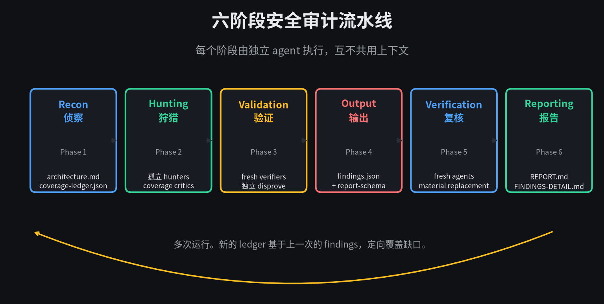
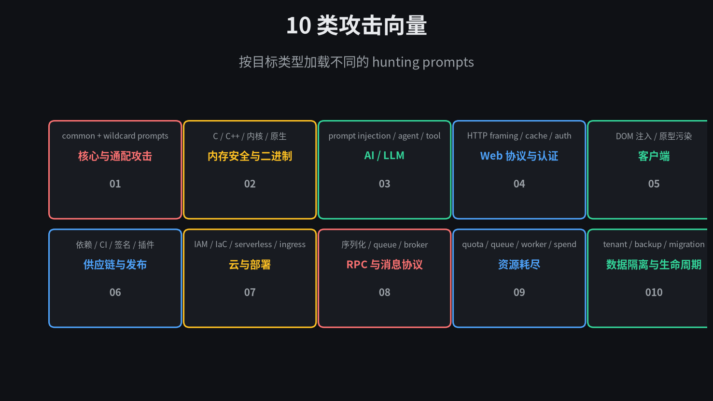
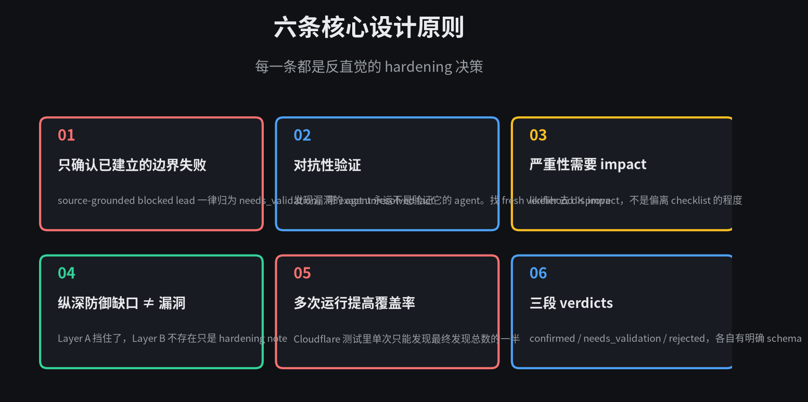
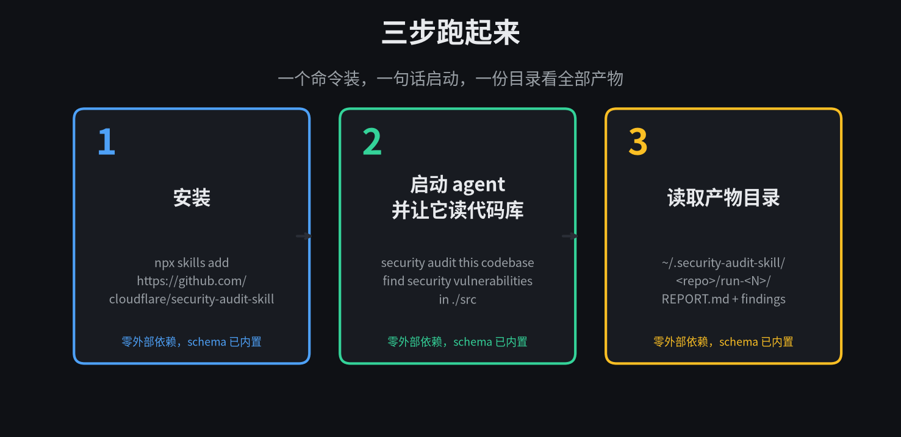

六阶段流水线。每个阶段独立 agent，互不共享上下文。
Cloudflare 上周开源了一个东西，叫 security-audit-skill。它不是一个新的安全产品，是一个 skill。装到你常用的 coding agent 里，它就会自动把 agent 变成一个安全审计员。
挺有意思的是它的起源。Cloudflare 自己的漏洞发现 harness 就是从这个 skill 演化出来的。原本是单仓库起点，后来长成了跨 fleet 的多阶段系统。现在它把起点公开了。
这篇先讲概念，再讲怎么用。
01
它到底是什么
它是一个 prompt 工程的集合，加上零依赖的验证脚本。合在一起形成一个有严格边界的安全审计工作流。
核心思想是 六阶段流水线 + 多隔离 agent。侦察、狩猎、验证、输出、复核、报告，每个阶段的 agent 都是 fresh context，看不到前面的对话。
为什么要隔离上下文。因为同一个 agent 发现的漏洞，自己再去验证，很容易带着「我找到的一定对」的偏见。Cloudflare 的解法很简单。让验证者是另一个 agent，拿着候选漏洞去 disprove 它。
整个 skill 大约 20 个 markdown 文件。SKILL.md 是入口，定义原则和触发条件。RECONNAISSANCE.md 管第一阶段，HUNTING.md 管第二阶段，依此类推。中间穿插 10 份不同目标的攻击类 prompts，外加 3 个 Node.js 小脚本做零依赖的 JSON schema 校验。
02
六个阶段怎么走
Phase 1，Reconnaissance。目标是搞清楚你要审计的仓库到底长什么样。产出 architecture.md（信任边界、输入面、已有证据）和 coverage-ledger.json（确定性覆盖清单）。
Phase 2，Coverage-led hunting。从 ledger 里拆出独立 hunting 单元，每个单元派一个 isolated hunter。另外有 coverage critic 专门找遗漏。
Phase 3，Candidate validation。每个候选漏洞发给 fresh verifier。它的唯一任务是 disprove 这个候选。能 disprove 就归为 rejected，不能归为 needs_validation，source-grounded 且能完全证明就 confirmed。
Phase 4，Structured output。把 confirmed、needs_validation、rejected 三类结果写进 findings.json，然后用 validate-findings.cjs 跑一遍 schema 校验。
Phase 5，Independent record verification。fresh agents 再去复核 findings 里的 source 证据。发现 material replacement 还要再换一个 verifier。
Phase 6，Target-neutral reporting。根据 verified records 和 coverage ledger 生成 REPORT.md、FINDINGS-DETAIL.md、NEEDS-VALIDATION.md。

十个 attack class，不同仓库自动加载不同 hunting prompts。
03
六条设计原则
这些原则是最有意思的部分。几乎每一条都在反直觉地对抗 AI 审计常见的错误。
**只确认已建立的边界失败。** 有 source-grounded blocked lead 但还没彻底证实？一律归 needs_validation，并记录 exact unresolved fact。不准打擦边球。
**对抗性验证。** 发现漏洞的 agent 永远不是验证它的 agent。这是整个 skill 最重要的隔离设计。
**严重性需要 impact。** likelihood 乘以 impact，不是偏离 checklist 多远。光「应该有」没用，要真能造成后果。
**纵深防御缺口 ≠ 漏洞。** Layer A 已经挡住了，Layer B 不在那里只是 hardening note，不算漏洞。这一条能砍掉大量告警噪音。
**多次运行提高覆盖率。** Cloudflare 自己的测试里，单次运行只能发现最终发现总数的一半。新的 ledger 会基于上一次的 findings 定向覆盖缺口。
**三段 verdicts。** confirmed 必须有完整 source trace + bounded observed result。needs_validation 有 exact unresolved fact 且没有 severity。rejected 记录 disproved candidate。三者不会混淆。

六条原则，每一条都在对抗 AI 审计最常见的错误来源。
04
怎么装
需要两样东西。一个是支持 tool use 和 parallel sub-agents 的 coding agent（比如 Cursor、Claude Code、Cline）。另一个是 Node.js，用来跑那两个零依赖验证脚本。
安装用 Skills CLI 一条命令：
npx skills add https://github.com/cloudflare/security-audit-skill \ --skill security-audit # 装到用户级（所有项目都能用） npx skills add https://github.com/cloudflare/security-audit-skill \ --skill security-audit --global
装完以后，skill 会在 agent 识别到 security audit / find vulnerabilities / pen-test 这类请求时自动激活。不需要你手动加载。
05
怎么跑
启动你的 coding agent，指向你要审计的代码库，然后直接说：
# 三种触发句式 security audit this codebase find security vulnerabilities in ./src do a security review, output to ~/audits/my-project
触发后 skill 自动决定模式。完整代码库审计用 full audit mode，安全问答用 guidance mode。full audit 默认把产物写到 ~/security-audit-skill/<repo-name>/run-<N>/。
产物目录里会有 architecture.md、coverage-ledger.json、findings.json、REPORT.md。多次运行的话 ledger 会叠加，自动跳过已覆盖的地方。

安装 → 一句话启动 → 产物目录自动生成。
06
两个需要注意的地方
第一，这个 skill 对 sandbox 有硬要求。目标如果需要编译、跑测试、起浏览器、跑 fuzzer，这些动作必须在 OS 级隔离里。没有隔离也能跑，但 workflow 会把 lead 都标成 needs_validation，不执行实际代码。
第二，它不替你做最后判断。confirmed 是有完整证据的，needs_validation 只是精确地记录了什么还没证实。要不要修复、怎么修复，还是人来做。
Cloudflare 的原文里有一句话，我觉得可以当总结。Agent 擅长穷举候选、系统地跑 checklist、发现边界情况。但对漏洞严重性、纵深防御是否生效、哪些告警该打哪些该忽略，人类的判断不可替代。
让 Agent 穷举候选，让隔离的 verifier 去 disprove，让人类决定什么值得修。
如果你有一个没人审过的小仓库，装这个 skill 跑一次，输出里应该能看到一些你之前没注意的地方。MIT 协议，可以随便用。